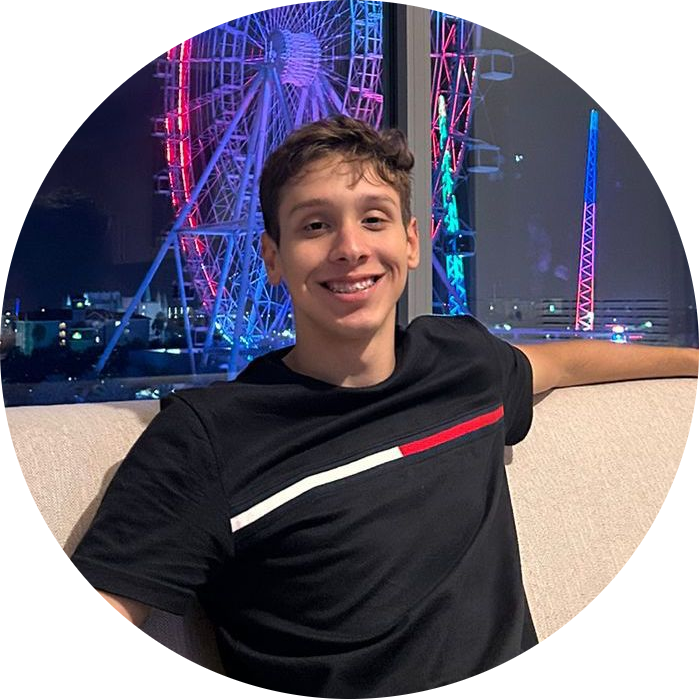

Olá, sou o Felipe Ferreira
• Estudante do curso Técnico em Informática Integrado ao Ensino Médio do Instituto Federal de Campinas
• Jogo basquete e gosto de tirar fotos
• Atuação no projeto: Levantamento de dados e auxílio nos códigos de Programação
